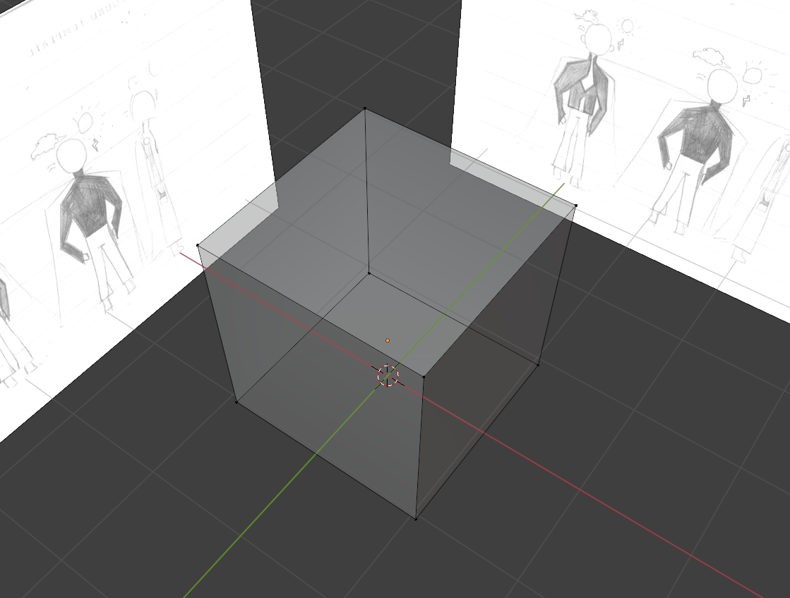
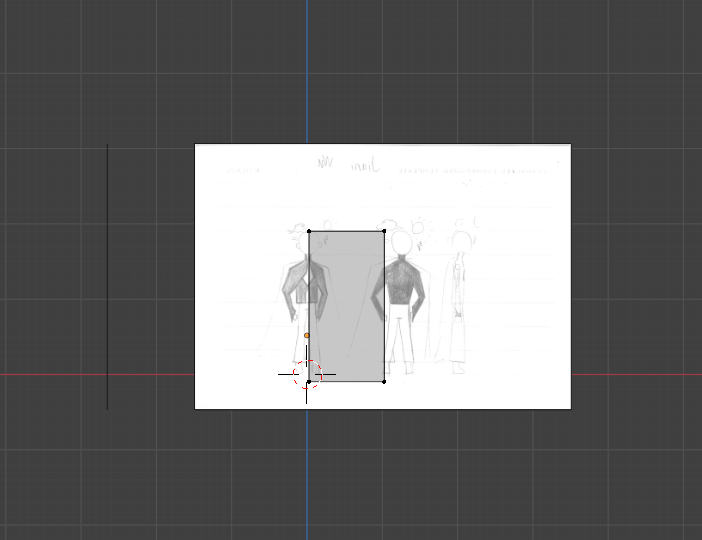
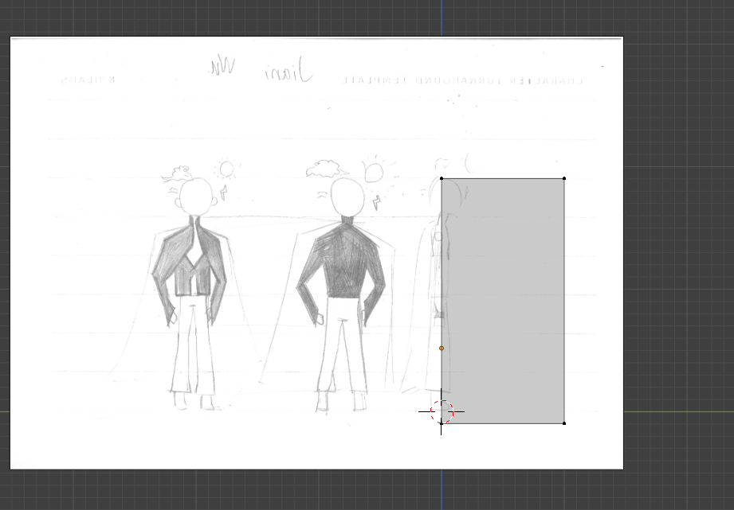

For how to make a torso, I added a cube in blender, and then corresponding to our template, that is, the side view and front view of the character, then deleted half of it, and then mirrored it to make the base of the torso.
  The below picture is already the torso after my development， because when I was improving my torso,there was no screenshot taken at the time I didn't make the screenshot before my torso improving and after.Therefore, it is not possible to show the comparison diagram of torso before and after improvement.） That I've saved my entire character and can't go back to my torso part, I've tried many different ways of breaking it down without success, (If you don't disassemble it, the torso, arms and neck are connected as one, so there is no way to change it) so sorry about this.
During the testing process, I think it is through constant debugging to first make the cube fit your template (sideview and frontview) And then turn off the template image to see whether your troso is coordinated and fits the character as a whole. Then do you best.
I didn't make all the photos the same size because, if the size is unified, the proportions (torso and the body) in the photos will appear uncoordinated, which will affect the visual effect.


I feel perfect about the proportions of my torso. For specific reasons, please see the answer in the next question.
Yes, overall, the shoulder width, chest, and waist are very consistent with the male character I designed. And the overall proportions are great too. "He is 1.75 meters tall and weighs 70 kilograms."
This is a picture of the entire model character。